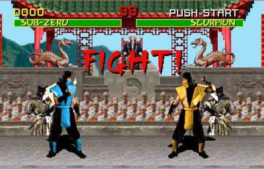
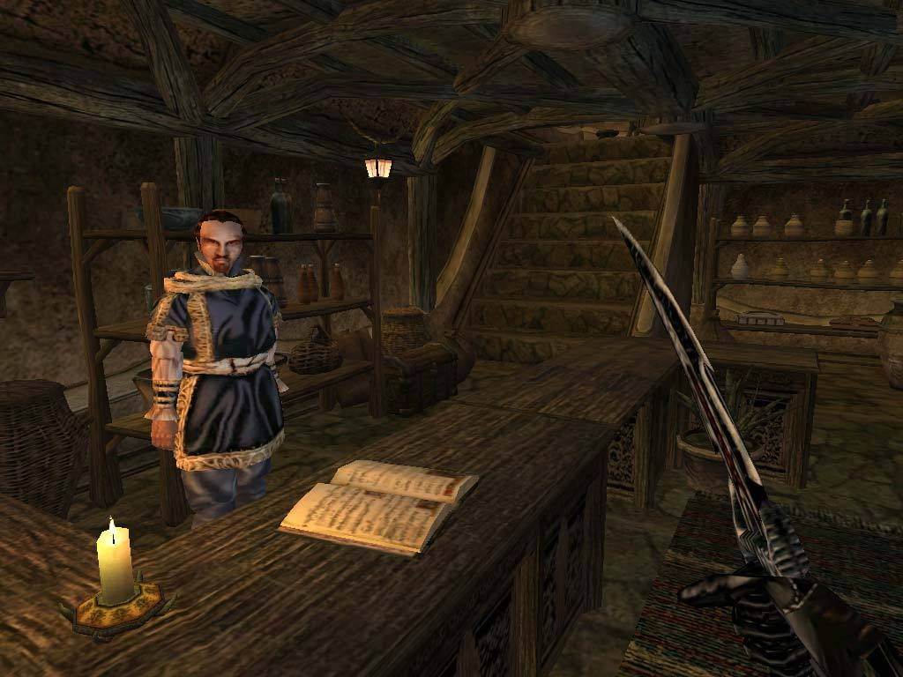
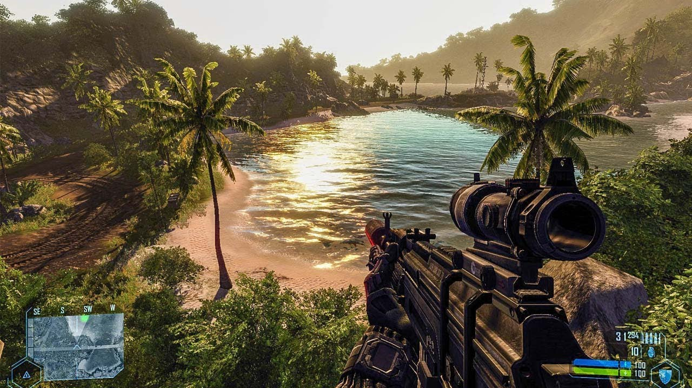
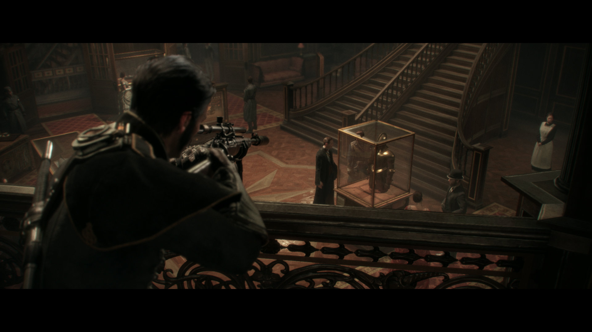

Введение
Можно долго спорить о том, является ли графика главным параметром в играх, однако отрицать её важность бесполезно. Каждому из нас хочется, чтобы изображение радовало нас качеством текстур, освещением, тенями и было максимально похожим на реальность. За десятки лет графическая составляющая игр сделала огромные шаги вперёд, пройдя путь от бесцветного растрового изображения до реалистичного красивого вида, глядя на который не всегда понятно, что именно на экране: игра или видео, снятое на камеру. Тому, как внешне менялись игры и как эволюционировала их графическая составляющая и посвящена эта страница.
Конец 60х - Конец 80х годов:
ориентир на мультфильмы
В конце 60х игровая индустрия действительно начала развиваться. Изображение в играх естественно было примитивным и, как правило, чёрно-белым. Для прорисовывания объектов использовали два метода: растровый(с помощью пикселей) и векторный(с помощью линий). Одим из самых известных таких представителей стала игра Pong 1972 года. На экране прорисовывались условные ракетки, снаряд, который нужно отбивать, счёт игроков и линия, разделяющая экран на две части. Довольно простая картина, однако для людей того времени это было чем-то запредельным и невероятным.

{kind=link}
{kind=link}
Поэтому можно представить, какое впечатление вызвала Space Invaders, вышедшая в 1978 году. В ней растровые изображения стали больше, количество объектов на экране так же увеличилось, а цветовая версия игры и вовсе приводила людей в восторг. Однако, хоть игры и начали отходить от чёрно-белого формата, объекты в них оставались примитивными и угловатыми. И это не удивительно – довольно трудно придать объекту реалистичную форму, если вы составляете его из квадратных пикселей. Эту проблему помогла решить векторная графика, которая начала применяться в играх во второй половине 70х годов. Объекты рисовались с помощью векторов – прямых линий, что позволяло более детально работать с формой, а иногда и вовсе придавать объём при помощи правильной геометрии. Одна из самых популярных игр с такой графикой – Asteroids 1979 года.
Наряду с появлением игр с растровой и векторной графикой появляются и игровые компании, что, несомненно, усиливает развитие игровой индустрии. Появляются первые игровые консоли и автоматы, игры становятся всё популярнее. В 1978 году выходит игра Fire Truck – её революционным отличием было то, что окружение вокруг управляемого объекта двигалось и тем самым создавалось впечатление, что грузовик действительно едет – до этого в играх использовался лишь статичный фон. Графика в играх действительно улучшалась – это приводило к увеличению разрешения для достижения большей чёткости и всё большего количества объектов на экране и использованию более насыщенной цветовой палитры. Логично, что из-за этого увеличивалось и требования к железу, что привело к созданию консолей нового поколения и первых ПК.
Квинтэссенция прогресса в графическом плане игровой индустрии в 80х – игра Zaxxon 1982 года. Графика в ней по тем меркам была очень качественной – цвета радовали глаз, а объекты детально проработаны. Так же она является первой игрой, где камера показывает действия не сбоку или сверху, а под углом, а её самолёт – первый управляемый объект, двигающийся не только в четырёх направлениях, но и по вертикали. В 1983 году выходит Dragon’s Lair, которая и вовсе являлась интерактивным мультфильмом. В игре впервые появились кат-сцены – видеовставки.

1985 год – выходит культовая игра Super Mario Bros., графика которой отвечала всем запросам геймерам того времени. Разработчики тогда считали, что в плане изображения игры должны стремиться к мультфильмом.
1987 год – появляются видеокарты, поддерживающие видеоадаптер VGA, способный выводить на экран изображения насыщенностью 256 цветов. После этого игры буквально заиграли новыми красками. Спустя два года в продажу поступает приставка Sega Mega Drive, которая поддерживала все доступные на тот момент нововведения и позволяла запускать игры с шестнадцати битной графикой.
1991 - 1996 года:
псевдо-3d и первые 3d игры
{kind=link}
{kind=link}
{kind=link}
В 1991 году в моду резко входят шутеры от первого лица, ключевую роль в этом играет HoverTank 3D. Её исключительной особенностью был вид от первого лица и возможность перемещаться в 3D пространстве. Wolfenstein(1992 год), Doom(1993 год), Duke Nukem 3D(1996 год) доказали, что на данном этапе развития игровой индустрии шутеры являются самыми технологичными и сложными в плане графики, так как давали возможность побродить по трёхмерным уровням. Однако, хоть их и принято считать трёхмерными это не так. На самом деле все они являются 2D играми – в заблуждение игрока вводят спрайты. Изображение стен, объектов и врагов сделаны таким хитрым образом, что способны изменять свой размер по мере приближения к ним или отдаления от них. За счёт этого появлялось ощущение дистанции. Фактически, разработчики не имея ни одного объёмного 3D объекта с помощью одних лишь спрайтов и текстур смогли создать ощущение пространства и внушить игроку, что он находится в трёхмерном мире.
{kind=link}
Хоть шутеры и являлись передовыми в плане графики, остальным играм тоже было чем похвастаться. В 1992 году вышла игра Mortal Kombat, которая вошла в историю не только своей жестокостью, но и тем, что в ней использовались не обычные спрайты, а оцифрованные изображения реальных актёров, что позволило добиться революционных результатов не только в плане изображения, но и в анимации движений. Metal Slug 1996 года показала, что изображение может быть очень чёткого и высокого разрешения, а спрайты могут состоять из красивых текстур. К этому моменту персонажи игр уже научились реалистично передвигаться, а окружение могло меняться и разрушаться(к примеру в Worms 1995 года). Параллельно с этим в играх стало использоваться настоящее 3D с полигональными моделями и объёмными предметами, на которые были наложены текстуры. Ярчайшем примером первых 3D игр является Star Fox 1993 года, для работы которой требовался процессор SuperFX. Так же одним из первых представителей 3D игр с полигональными моделями стал The Terminator: Future Shock 1995 года. Его главной особенностью была возможность двигать мышью в абсолютно любом направлении.
1994 - 2000 года:
Sony Playstation, DirectX и
огромный прорыв в игровой индустрии
В 1994 году выходит консоль Sony Playstation, большинство игр которой были уже в 3D. Вслед за The Terminator: Future Shock в 1995 году появляется первая игра легендарной гоночной серии Need For Speed, которая так же вместо спрайтов содержала 3D объекты. В этом же году выходит первая версия DirectX на операционную систему Windows 95.

96й год в игровой индустрии стал по настоящему прорывным – компания 3dfx Interactive выпускает видеокарту Voodoo, которая поддерживает 3D ускорение. Такое железо позволило появится на свет таким играм, как Tomb Rider и Quake, где впервые была реализована система динамических источников света. Вплоть до 2000-го года выходили новые версии DirectX, новое железо и, соответственно, новые игры, графика в которых постепенно улучшалась – модели обрастали всё большим количеством полигонов и более чёткими текстурами. На примере Half Life видно, какой огромный шаг игровая индустрия сделала с момента выхода первой видеокарты Voodoo.
2000 - 2005 года:
Sony Playstation 2, Directx 8,
появление шейдеров

{kind=link}
2000й год ознаменован выходом консоли Sony Playstation 2 и 8й версией DirectX, которая поддерживала шейдерные модели. Шейдеры – это программы, определяющие параметры предмета в игре, его взаимодействие с окружающем миром, деформацию и внешний вид. Они позволили разработчикам избавиться от потребности прописывать изменение каждого объекта в зависимости от условий. Это помогло выйти в свет таким играм как GTA 3 и The Elder Scrolls III: Morrowind. Именно шейдеры обеспечили разнообразный и живой открытый мир в этих играх. Игры того времени действительно начинали поражать своей красотой: физика, тени и освещение уже отдалённо начинали напоминать реальный мир.
Например, в игре Splinter Cell 2002 года прекрасно было реализовано освещение и взаимодействие с ним: практически с каждым источником света на уровне можно было взаимодействовать, что совершенно меняло освещение и положение теней от объектов. Нельзя забывать про технологию Bump Mapping, которая создаёт неровности на текстуре. К примеру, в игре мы можем видеть объёмную кирпичную стену и нам может казаться, что каждый кирпич торчит из стены, однако если встать под определённым углом, можно увидеть, что на самом деле эта поверхность плоская и всё это лишь хитрая прорисовка текстуры. Но несмотря на неплохое развитие освещения, технологии и анимации, сами текстуры в играх были всё ещё не на высоте.
2005 - 2013 года:
Sony Playstation 3, Xbox 360, Directx 10,
ориентир на фильмы
2005-2006 года - появляется новое поколение консолей – Playstation 3, Xbox 360 и Nintendo Wii U, а так же 10я версия DirectX, прекрасно работающая с HDR-рендерингом, благодаря которому изображение в TES IV: Oblivion и Mass Effect на тот момент было таким реалистичным.
{kind=link}
2007 год – выходит главное графическое явление этого периода – Crysis, с отличной графикой и по современным меркам. Этот высокотехнологичный шедевр стал эталонном графики того времени. Так же в это время начинает свое шествие серия Assassin’s Creed, первая часть которой выводила на экран рекордное количество живых персонажей. Разработчики начали уверенно штурмовать графические пределы – если в 80х игры пытались максимально походить на мультфильмы, то сейчас они взяли ориентир на фильмы. В них существенно прибавилось кинематографичности и кат-сцен, а вышедший в 2010 году эксклюзивно на Playstation Heavy Rain и вовсе называют интерактивным фильмом.
В 2011 году на свет появилась L.A. Noire, которая возвела мимику и лицевую анимацию персонажей в абсолют – в ней персонажи не просто открывали рот во время речи, а проговаривали каждую букву и максимально точно изображали эмоции.
2013 - 2019 года:
наши дни

{kind=link}
В 2013 году выходит новое и последнее на данный момент поколение консолей: Xbox ONE и Playstation 4. Игры на данных консолях по графике были на голову выше консолей прошлого поколения. Главными игровыми событиями стали Bioshock Infinite и GTA 5. Bioshock поражал своей цветовой гаммой и потрясающем окружением, GTA – показала огромный проработанный мир и отлично сделанных персонажей. Казалось, что графике в играх и так уже некуда больше развиваться, но в 2015 году вышел эксклюзив на Playstation 4 – The Order 1886, целью которого и была демонстрация нового уровня графики. Несомненно, разработчикам удалось удивить – игра может похвастаться действительно реалистичной картинкой – начиная от цветовой гаммы, заканчивая анимацией одежды главного героя. Релиз Uncharted 4 в 2016 году вновь удивил всех потрясающей графикой и отличной работой с лицевой анимацией.
Вот мы и подошли к тому, что имеем на данный момент. Как видим, графика в играх сделала огромный шаг вперёд. Сейчас каждый месяц выходят игры, изображение которых поражает. Появляется всё новое и новое железо и драйвера. Какой именно будет графика в играх через несколько лет никто не знает, но учитывая темпы развития игровой индустрии очевидно, что она будет ещё более захватывающей и реалистичной.